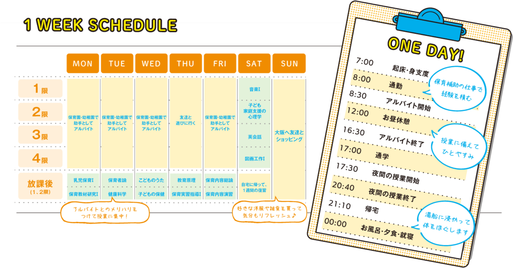

-
昼夜間部の特徴Feature of Day-Night
働きながら、2年間で保育士・幼稚園の先生へ。
「大好きな子どもと関わる仕事がしたい」
「夢だった仕事にもう一度挑戦したい」
「確かな資格を持ち、一生の仕事にしたい」
現在、社会人として活躍しながらも、こんな思いを持つ方も多いのではないでしょうか。当校では土曜の昼間を活用する昼夜間部を設置し、資格取得・卒業までを2年間に設定。通常3年間を要する夜間部とは異なり、働く人の身になった効率の良いカリキュラムや指導を徹底しています。
-
- 昼夜間部だから、2年で卒業
- 平日の夜間(17:40-20:40)と土曜の昼間(9:00-16:00)にカリキュラムを設定。2年間で卒業でき、しかも保育士資格と幼稚園教諭二種免許をダブル取得できます。
-
- 短大との連携により、幼稚園教諭二種免許取得が可能に
- 通常、保育の専門学校では、幼稚園教諭二種免許の取得はできませんが、当校では近畿大学九州短期大学通信教育部との提携により可能です。授業(スクーリング)は、ほぼ当校で行われ、また当校卒業と同時に短大の卒業資格も得られます。
-
- 提携する保育園や幼稚園で勤務
- 昼間は現在の職場のまま、または提携する保育園や幼稚園で保育補助として勤務することができます。卒業後、希望すれば、勤務した園に就職することも可能です。
時間割(カリキュラム)Timetable

保育学科で取得できる
免許・資格licence · Qualification
- 保育士資格
-
幼稚園教諭
二種免許状
※そのほかの資格取得も可能です。詳しくは「資格取得サポート」ページをご覧ください。